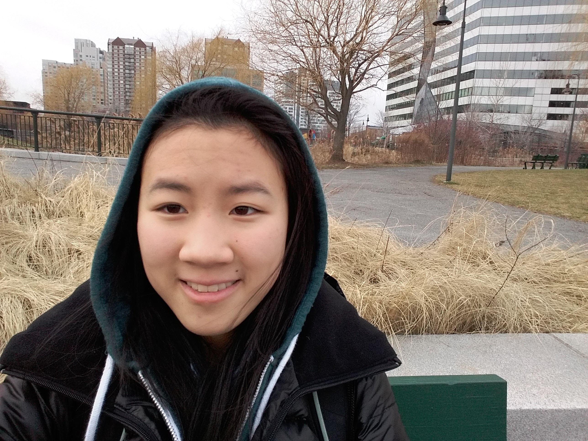

I am currently a freshman at Northeastern University studying computer science. I started coding in high school thanks to the computer science program at Stuyvesant High School. There, I took computer science for three years with intro classes, AP classes, and a software development class.